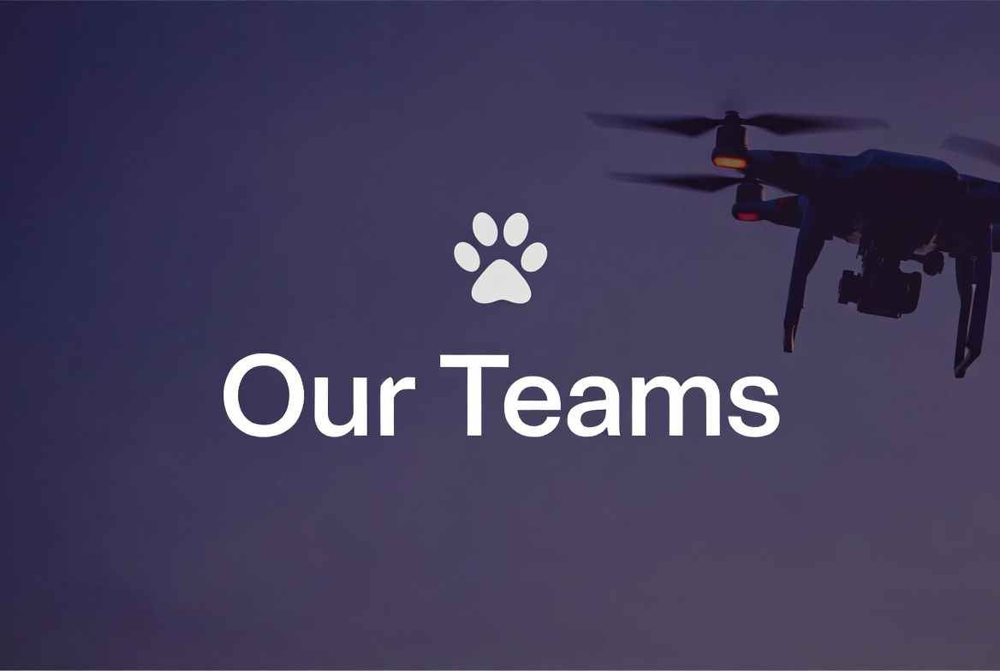

Isle of Man’s dedicated canine search and rescue charity • Charity No. 1387
Noodle’s Canine Rescue began in June 2025 when a group of passionate volunteers came together after a dog named Elvis had been missing for five weeks. Recognising the need for a more coordinated, technology-enabled response to missing dog incidents on the Island, the team formed with a clear mission: to bring lost dogs home faster using thermal drones, thermal handheld cameras, systematic ground searches, 4g wildlife cameras and trained scent dogs.
Named after Noodle — our own young collie who is currently in scent discrimination training — the organisation has grown rapidly from a grassroots volunteer effort into an officially registered Isle of Man charity (No. 1387) on 4 June 2026. In our first year we handled 55 missing dog reports, 25 of which were active dog searches and the remainder being found on advice alone. This has allowed us to achieve a 100% recovery rate so far.
Our purpose is simple but vital: to reduce the time dogs spend missing, minimise distress to animals and families, and return every dog safely home. We exist to provide a professional, compassionate and rapid response service that complements the Island’s emergency services and supports the community when a beloved dog goes missing.
All team members receive structured, role-specific training. This includes search techniques, map reading and navigation (using OS maps and GPS), radio communications protocols, thermal drone operation and image interpretation, canine first aid, and safe working practices in varied Isle of Man terrain (coastal cliffs, plantations, bogs and rural areas).
We maintain the highest standards of safety, animal welfare and professionalism. Our volunteers operate under clear incident command structures and coordinate closely with emergency services when required. Drone pilots hold appropriate aviation certifications and we continuously invest in advanced training and equipment maintenance.

Led by experienced volunteer drone pilot Aaron O’Reilly, our Drone Team operates professional-grade thermal imaging drones capable of detecting heat signatures from significant distances, even in dense woodland, coastal areas or complete darkness.
Key capabilities include rapid deployment for night searches, large-area coverage that would take ground teams many hours, and real-time coordination with ground and scent dog teams via radio. Pilots are trained in CAA-equivalent regulations, thermal image interpretation specific to canine detection, search grid planning, and safe operations in the unique Manx environment. The team’s success has been instrumental in our high recovery rate, particularly in difficult or time-critical cases.
Our Ground Search Team carries out systematic physical searches on foot. Volunteers are trained in proven search patterns (line abreast, grid, spiral and contour searches), navigation, terrain assessment and radio discipline. They are experienced in the Island’s varied and sometimes hazardous landscapes — from coastal paths and cliffs to plantations, ravines and boggy moorland.
The team works in close coordination with drone intelligence, often being directed to precise locations identified from the air. All members receive canine first aid training and prioritise both human and dog safety during operations.
Our Dog Handling team is just starting out, working with a training scent dog to provide precise location capability, especially in dense cover or when visual/thermal detection is limited. The team is Noodle, currently, our 18-month-old collie who is currently undergoing scent discrimination training to become a fully qualified search dog for the organisation.
Handlers are experienced in working dog training, welfare and integration with drone and ground assets. Scent dogs will add a vital layer of capability — able to detect and follow scent in conditions where technology alone may be challenged — while always operating with the highest standards of animal welfare. We will also be looking to expand our canine scent discrimination team once we have built and proven the training packs with real world searches.
Want to join one of our teams?
We are always looking for dedicated volunteers for ground searching, drone observation, logistics and community support roles. Full training is provided. Get in touch via our reporting form or email us to express interest.